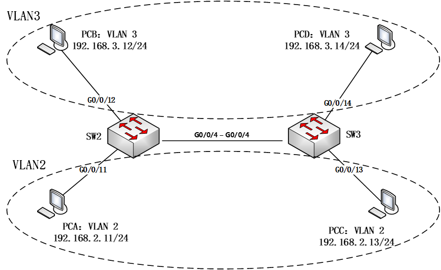
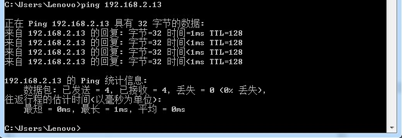

实验目的
了解VLAN（虚拟局域网）的作用；
掌握跨交换机的VLAN的配置方法；
掌握trunk和Hybrid端口的配置方法；
了解VLAN数据帧的格式、VLAN标记添加和删除的过程。
实验任务
本实验模拟某公司网络场景。该公司规模较大，内部放置了两台接入交换机（SW2和SW3）负责员工的网络接入，而且在交换机上划分不同VLAN来隔离广播域。由于员工较多，相同部分的员工通过不同交换机接入。为了保证在不同交换机下相同部门的员工能相互通信，需要配置交换机之间的链路为干道模式，以实现相同VLAN跨交换机通信。
实验原理
VLAN概要
由一台或多台交换机/集线器所组成的1个广播域称为扁平网络（flat network）。相互连接的硬件会接收有网络发来的广播帧。因此，随着连接硬件数量的增加，广播数据也会增加，网络状况也就越发混杂。为了减少广播数据，可以采用将整个扁平网络进行逻辑分段的VLAN（Virtual LAN）技术——一种专门为隔离二层广播报文设计的虚拟局域网技术。在一个VLAN中使用同一个广播域，不同的VLAN用户属于不同的广播域，它不能接收来 自于不同VLAN用户的广播报文，因此可以有效地控制该域内广播通信的规模。

提示
网络中将传播过多的广播信息而引起的网络性能恶化的现象称为广播风暴。广播帧属于二层并不会跨越三层，所以为了解决广播风暴，可以使用三层设备隔离广播域，减小广播域范围，比如可以使用路由器来隔离广播域，但由于路由器属于三层设备，对数据的转发容易形成瓶颈，因此一般使用VLAN来隔离广播域。
VLAN帧格式
当某个VLAN需要跨越多个交换机通信时，一般会使用 中继端口（trunk port或Hybrid port） 的VLAN标签（tag VLAN）。IEEE 802.1Q标准规定在原有的标准以太网帧格式上增加一个特殊的标志域——tag域，用于表示数据帧所属的VLAN ID，带有VLAN标签的数据包可以通过中继端口完成以太网数据帧的收发。

在以太网中，TPID的值为0x8100。如果该值不是0x8100，那么该域则不是表示TPID信息，而是被当作“长度/类型”数据域被识别。
TCI又分为PCP、CFI和VLAN ID三个域。
PCP（Priority Code Point）：该域占用3个bit位，用于标识数据帧的优先级。
CFI（Canonical Format Indicator）：该域仅占用1bit 位，如果该位为0，表示该数据帧采用规范帧格式，如果该位为1，表示该数据帧为非规范帧格式。
VLAN ID：该域占用12个 bit 位，它明确指出该数据帧属于某一个VLAN。0仅用于识别PCP中表示的优先级，4095（0xFFF）为预留值，所以VLAN ID 表示的范围为 1-4094。

VLAN端口的分类
根据端口对 VLAN 数据帧的处理方式，可以将交换机的端口分为 Access port、 Trunk port 和 Hybrid port三类。
Access端口
Access 端口一般是指那些连接不支持 VLAN 技术的终端设备的端口，这些端口接收到的数据帧都不包含 VLAN 标签，而向外发送数据帧时，必须保证数据帧中也不包含 VLAN 标签。交换机的Access 端口一般接主机或路由器。
Access端口收报文 ：收到一个报文,判断是否有VLAN标签：如果没有则打上端口的PVID（默认VLAN），并进行交换转发,如果有则直接丢弃（缺省）；
Access端口发报文 ：将报文的VLAN信息剥离，直接发送出去。

Trunk端口
Trunk 端口一般是指那些连接支持 VLAN 技术的网络设备（如交换机）的端口，这些端口接收到的数据帧一般都包含 VLAN 标签（数据帧 VLAN ID 和端口缺省 VLAN ID 相同除外），而向外发送数据帧时，必须保证接收端能够区分不同 VLAN 的数据帧，故常常需要添加 VLAN 标签（数据帧 VLAN ID 和端口缺省 VLAN ID 相同除外）。一般用于交换机之间的连接。
Trunk端口收报文 ：收到一个报文，判断是否有VLAN标签。如果没有则打上端口的PVID（默认VLAN），再进行交换转发；如果有判断该trunk端口是否允许该 VLAN的数据进入，如果可以则转发，否则丢弃；
Trunk端口发报文 ：比较端口的PVID（默认VLAN）和将要发送报文的VLAN标签，如果两者相等则剥离VLAN标签，再发送，如果不相等则直接发送。

Hybrid端口
Hybrid 端口属于 Access 和 Trunk的混合模式，工作在 hybrid 模式下的端口可以属于多个VLAN，可以接收和发送多个 VLAN 的报文，可以用于交换机之间连接，也可以用于连接用户的计算机。Hybrid 端口和 trunk 端口的不同之处在于 hybrid 端口可以允许许多VLAN 的报文不带标签，而 trunk 端口只允许缺省 VLAN 的报文不带标签。
Hybrid端口收报文 ：收到一个报文,判断是否有VLAN标签。如果没有则打上端口的PVID（默认VLAN），再进行交换转发；如果有则判断该hybrid端口是否允许该VLAN的数据进入。如果可以则转发，否则丢弃(此时端口上的untagged配置是不用考虑的，untagged配置只对发送报文时起作用)。
Hybrid端口发报文 ：
(1)判断该VLAN在本端口的属性（untagged或 tagged）；
(2)如果是untagged则剥离VLAN信息，再发送，如果是tag则直接发送。

备注
以太网交换机带VLAN标签的帧转发说明
当交换机某个端口接收到的数据帧，首先，检查该数据帧是否带VLAN标签，如果没有，则将该端口缺省VLAN ID（pvid）作为其VLAN ID，如果带VLAN标签，则检查是否在允许列表里面，若不在则丢弃该数据帧。接下来，交换机结合VLAN ID进行源MAC地址学习，更新MAC地址表。然后，根据该数据帧的目的MAC地址和VLAN ID，查找MAC地址表并向相应端口转发该数据帧。最后，在发送数据帧的端口，需要根据该VLAN ID的类型（Tagged或Untagged ）来决定是否将VLAN标签去掉，然后发送数据帧。
（更多关于VLAN帧转发详见参考文献中的《计算机网络实验教程》以及《奠基·计算机网络（华为微课版）》）
实验环境与分组
交换机2台，计算机2台，2人一组。
实验组网
实验步骤
通过telnet登录交换机
Step1：
打开SecureCRT，点击窗口中的“快速连接”图标，如图所示：

Step2：
在弹出的窗口中，输入需通过telnet访问的设备IP（见表 ATM管理机地址表 ）和端口号，然后点击“连接”即可。（SW2的port为3004，SW3的port为3005）如图所示：
机柜编号 |
ATM管理路由器的IP地址 |
|---|---|
1 |
10.251.130.241 |
2 |
10.251.130.242 |
3 |
10.251.130.243 |
4 |
10.251.130.244 |
5 |
10.251.130.245 |
6 |
10.251.130.246 |
7 |
10.251.130.247 |
8 |
10.251.130.248 |
9 |
10.251.130.249 |
10 |
10.251.130.250 |

交换机 不需要输入用户名和密码 。

Step3：
登录成功后，即进入用户视图。在用户视图下，用户可以完成查看运行状态和统计信息等功能，此时屏幕上显示:

恢复出厂设置(清空上一次的配置)
每次做实验前，先清空上一次的配置，本次实验需清空SW2、SW3的配置。
Step1：
在用户视图下，使用如下命令进行配置的清空
1 <Quidway>reset saved-configuration //清除配置
2 The device configurations will be erased to reconfigure. Are you sure?(y/n):y //输入y继续删除
3 <Quidway>display saved-configuration //查看删除后的配置

Step2：
在用户视图下，使用如下命令清空配置，并进行重启
1<Quidway>reboot //重启
2All the configuration will be saved to the next startup configuration. Continue? [y/n]:n //输入n不保存到启动配置
3System will reboot! Continue? [y/n]: //输入y，继续重新启动
4<Quidway>display current-configuration //重启后查看当前配置

导入设备初始配置
初始配置用于关闭不需要的接口和为网络设备命名，以构建符合本实验的网络拓扑。
SW2导入下列初始配置
1 system-view
2 sysname SW2
3 user-interface console 0
4 idle-timeout 60
5 quit
6 int range g0/0/1 to g0/0/3
7 shutdown
8 quit
9 int g0/0/24
10 shutdown
11 quit
12 quit
SW3导入下列初始配置
1 system-view
2 sysname SW3
3 user-interface console 0
4 idle-timeout 60
5 quit
6 int range g0/0/1 to g0/0/3
7 shutdown
8 quit
9 int g0/0/24
10 shutdown
11 quit
12 quit
导入信息步骤如下图所示。复制以上的代码并分别粘贴入SW2、SW3。


点击Paste即可。
提示
也许有同学问：“为什么要初始配置？”
原因在于，我们的实验机柜里的设备是互联互通的，为了能构建本实验的组网图，需要断开与其他设备（交换机SW1、路由器R1和R2）的连接，只保留SW2和SW3之间的连接端口。
配置计算机IP地址
配置各台计算机的IP地址。打开“控制面板” -> “网络和Internet” -> “查看网络状态和任务” -> “更改适配器设置”。在“本地连接”上点击右键，选择“启用”。


点击“属性”。
PCA的IP地址配置如下：

双击“Internet 协议版本4（TCP/IPv4）”按照下表设置PCA、PCB、PCC和PCD这四台电脑的IP地址。
计算机 |
IP地址 |
|---|---|
PCA |
192.168.2.11/24 |
PCB |
192.168.3.12/24 |
PCC |
192.168.2.13/24 |
PCD |
192.168.3.14/24 |
进入交换机配置vlan2添加相应接口
Step1：
在SW2交换机上的系统视图下使用下列命令进行VLAN配置：
SW2基本配置
1system-view //进入系统视图
2vlan 2 //创建vlan 2
3port g0/0/4 //把g0/0/4口放进vlan 2
4port g0/0/11 //把g0/0/11口放进vlan 2
Step2：
在SW3交换机上的系统视图下使用下列命令进行VLAN配置：
SW3基本配置
1system-view //进入系统视图
2vlan 2 //创建vlan 2
3port g0/0/4 //把g0/0/4口放进vlan 2
4port g0/0/13 //把g0/0/13口放进vlan 2
Step3：
在SW2和SW3上查看划分的vlan信息：
SW2 vlan:

SW3 vlan:

Step4：
在PCA上能ping通 PCC，在PCB上ping PCD，是否ping通?
PCA ping PCC:

PCB ping PCD:

进入交换机配置vlan3接口ip并观察连通性
Step1：
在SW2交换机上的系统视图下使用下列命令进行配置：
SW2基本配置
1vlan 3 //创建vlan 3
2port g0/0/12 //把g0/0/12口放进vlan 3
3quit //退出至接口视图
在SW2上使用“display vlan”命令查看VLAN的信息。

Step2：
在SW3交换机上的系统视图下使用下列命令进行配置：
SW3基本配置
1vlan 3 //创建vlan 3
2port g0/0/14 //把g0/0/14口放进vlan 3
3quit //退出至接口视图
在SW3上使用“display vlan”命令查看VLAN的信息。

Step3：
在PCD上ping PCB验证连通性，还是没有ping通。

配置接口trunk模式并验证连通性
Step1：
将SW2与SW3的g0/0/4接口模式配置为trunk，使得所有VLAN都可以通过。 在SW2和SW3交换机的系统视图下使用下列命令进行配置：
SW2 和 SW3 基本配置
1interface g0/0/4 //进入g0/0/4接口
2undo port default vlan //删除端口下的缺省vlan配置
3port link-type trunk //把端口的连接类型改为trunk模式
4port trunk allow-pass vlan all //Trunk接口模式下允许通过所有vlan
5quit //退出至接口视图
Step2：
在SW2和SW3上使用“display vlan”命令查看VLAN的信息，我们看到vlan3有trunk接口的g0/0/4，如图：
SW2 vlan:

SW3 vlan:

Step3：
在PCB上使用ping PCD命令测试连通性，如图：

Step4：
在PCA上使用ping PCC命令测试连通性，如图:
配置交换机接口Hybrid模式
Step1：
将SW2与SW3的g0/0/4接口模式配置为Hybrid，参照下面的命令对两台交换机的G0/0/4端口进行设置。
Hybrid实验拓扑图:

在SW2和SW3交换机的系统视图下使用下列命令进行配置：
SW2 和 SW3 基本配置
1interface g0/0/4 //进入g0/0/4接口
2undo port link-type //删除端口下的连接类型
3Warning: This command will delete VLANs on this port. Continue?[Y/N]: //输入Y，删除g0/0/4端口的VLAN配置
4port link-type hybrid //把端口的连接类型改为hybrid模式
5port hybrid pvid vlan 1 //把g0/0/4的缺省VLAN（pvid）写成1
6port hybrid tagged vlan 2 //从g0/0/4发出的vlan2数据帧时带标签
7port hybrid untagged vlan 3 //从g0/0/4发出的vlan3数据帧时不带标签
Step2：
在SW2和SW3上使用“display vlan”命令查看VLAN的信息，我们看到vlan3 g0/0/4有带标签，vlan2 g0/0/4不带标签，如图：
SW2 vlan:

SW3 vlan:

此时，PCA 能ping通PCC，PCB不能ping通PCD。
注意
请解释Hybrid模式中，PCB不能ping通PCD的原因。修改两个交换机的G0/0/4端口的配置，写出配置命令，使PCB和PCD能够ping通。